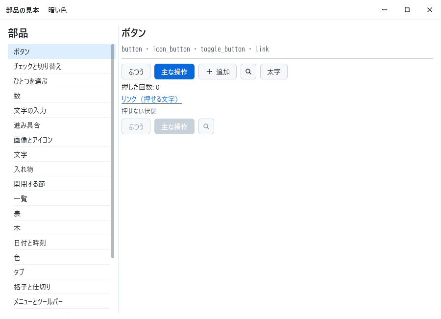
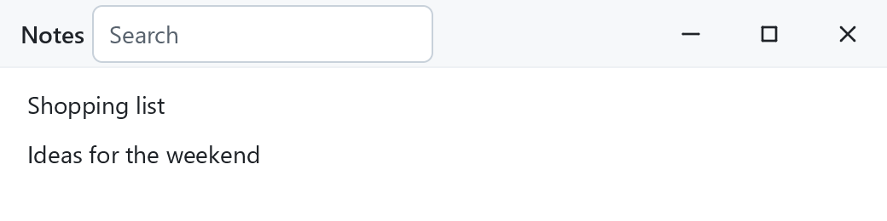
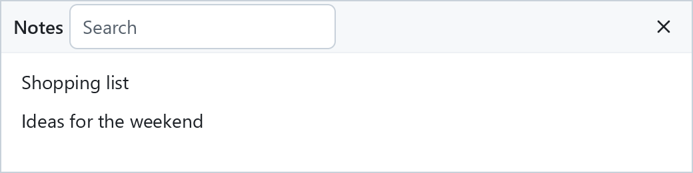
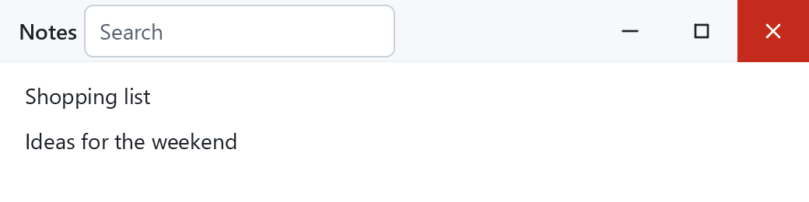

kargui 開発レポート ・ 第 15 章
題の帯
計画の 0.4 では、ドッキングの次に「アプリの仕組み」を作ります。その最初が、Windows の題の帯の作り替えです。Windows 11 の新しいアプリや VS Code のように、題の帯の中にメニュー・検索・タブなどを置けるようにしました。kargui は、最小化・最大化・閉じるのボタンと、窓をつかんで動かす所を受け持ちます。この章では、範囲を決めた理由と書き方、Windows に帯の場所を答える仕組みを紹介します。後半では、作者の 4 回の手の確かめで見つかった 3 つの不具合と、その直し方を書きます。
この章で分かること
- 題の帯に部品を置ける形を選んだ理由
- 同じ
ui.title_barが、OS によって帯の中にも、窓のいちばん上の行にもなる作り - Windows に、窓のどこが帯でどこがボタンかを答える方法と、スナップレイアウトが出る条件
- 読み上げの木に、どの節の子でもない節を送ってはいけない理由
- 閉じるまで戻らないメニューを、窓の状態を借りたまま出してはいけない理由
範囲を決めた
ドッキングの 3 段目を送った後、作者に題の帯の作り替えの範囲を尋ねました。計画書には「Windows の題の帯の作り替え」とだけ書いてあり、中身を決めていなかったためです。判断の軸は、アプリの見た目の自由、Windows らしい動き（スナップレイアウト・窓の影・2 回押して最大化）を保てるか、作る量の 3 つです。
| 案 | 見た目の自由 | Windows らしい動き | 作る量 |
|---|---|---|---|
| 題の帯に部品を置ける（推奨） | 題の帯の中まで、アプリが決められる | kargui が受け持つので保てる | 多い |
| 色だけを変える | 題の帯の色と文字の色だけ | OS のままなので変わらない | 少ない |
作者の答えは「その形で進めて」でした。Linux の GNOME では、kargui は前から自分で題の帯を描いています（第 10 章）。今回の作り替えで、Windows と GNOME の帯を同じ書き方で使えるようにしました。

書き方
アプリは Options::custom_title_bar を true にし、ビューの初めで ui.title_bar を呼びます。中に置いた部品が題の帯に入ります。
impl App for Notes {
fn view(&mut self, ui: &mut Ui) {
ui.title_bar(|ui| {
ui.label("Notes").bold();
ui.text_input(&mut self.search).hint("Search");
});
ui.label("Shopping list");
}
}
let mut options = Options::new("Notes");
options.custom_title_bar = true;帯の中の、押せる部品でない所は、OS の題の帯と同じ働きをします。引っ張ると窓が動き、2 回押すと最大化し、右クリックで窓のメニューが出ます。押せない文字（上の「Notes」）の上も同じです。ui.title_bar に何も入れなければ、帯の左に窓の題を出します。
同じ書き方を、どの OS でも使えるようにしました。題の帯を誰が描くかで、部品の置き場所が変わります。

custom_title_bar が true）。kargui が帯を描き、部品は帯の左、3 つのボタンは右端に並ぶ。520×130 の窓を試験台で 2 倍で撮った。
custom_title_bar にかかわらず帯を描く。ボタンは GNOME の設定に合わせる（この写真は閉じるだけ）。縁の線も kargui が引く。custom_title_bar が false の Windows）。部品は窓のいちばん上の行になる。Windows に帯の場所を答える
Windows の題の帯は、本来は窓の「枠」（中の外側）にあり、OS が描きます。kargui が描くには、まず帯を窓の中に入れます。窓の枠の大きさを決める知らせ（WM_NCCALCSIZE）で、OS に計算させた後、上の端だけを窓の上の端に戻します。左右と下の縁は OS のままなので、大きさを変える所と窓の影は、今までどおり OS が受け持ちます。最大化した窓は画面の外へ縁の厚さだけはみ出すので、その時だけ上を縁の厚さだけ下げます。
帯を窓の中に入れると、OS は帯のどこを押しても「窓の中」だと考えます。そこで、窓のどこに何があるかを尋ねる知らせ（WM_NCHITTEST）に、kargui が答えます。答え方は 2 段です。先に OS に答えさせ、OS が「窓の中」（HTCLIENT）と答えた所だけを kargui が決めます。左右と下の縁の答えは、OS のまま返します。
| 場所 | 答え | 起きること |
|---|---|---|
| 押せる部品（帯の New のボタン） | HTCLIENT（1） | kargui が入力を受ける |
| 何も無い所、押せない文字 | HTCAPTION（2） | OS が窓を動かす。2 回押すと最大化し、画面の端へ寄せられる |
| 最大化のボタン | HTMAXBUTTON（9） | Windows 11 のスナップレイアウトが出る |
| 上の縁 | HTTOP（12） | OS が高さを変える |
| 左の縁 | HTLEFT（10、OS の答えのまま） | OS が幅を変える |
表の答えは、確かめのアプリの窓に、帯に沿って 20 画素ごとに同じ知らせを送って得た値です。
スナップレイアウト（窓の並べ方の候補）は、最大化のボタンの所で HTMAXBUTTON と答えた時だけ出ます。この答えを返すと、OS はそのボタンの上の動きを、窓の中の知らせ（WM_MOUSEMOVE など）ではなく、枠の知らせ（WM_NCMOUSEMOVE・WM_NCLBUTTONDOWN など）で送ってきます。kargui は、最大化のボタンの上の乗る・押す・離す・離れるの知らせを、窓の中の入力に直します。こうして、ほかのボタンと同じように、乗った時の塗りと押した時の動きを出しています。

Windows では、窓の縁の線と影は OS が描くので、kargui は縁の線を引きません。GNOME では、合成が影も縁も描かないので、kargui が縁に線を引きます（上の GNOME の写真）。
作者の手の確かめ
作者に、見本で 11 の手順を試してもらいました。帯の部品を押す、帯を引いて窓を動かす、2 回押して最大化する、スナップレイアウトを出す、右クリックで窓のメニューを出す、上の縁で高さを変える、最小化して戻す、閉じる、などです。記録に異常が無くなるまで、4 回試してもらいました。
| 回 | 記録から見つかったこと | 原因 | 直し方 |
|---|---|---|---|
| 1 回目 | 見本が起動の直後に止まった（3 回とも） | 帯の空の入れ物を子の並びから外し、読み上げの木に親の無い節が入った | 外さない。読み上げの木は、たどれる節だけを送る |
| 2 回目 | 帯の右クリックで、窓のメニューが出なかったとみられる | 帯を窓の中に入れた窓では、OS が窓のメニューを出さない | kargui が窓のメニューを出す |
| 3 回目 | メニューを開いている間に、窓の処理が 722 回、二重に呼ばれた | 窓の状態を借りたまま、メニューを出していた | メニューは、借りを返した後に出す |
| 4 回目 | 異常なし（二重の呼び出しも 0 回） | ― | ― |
1 回目: 起動の直後に止まった
見本は、3 回とも最初のフレームを描いた直後に止まりました。記録の最後には、読み上げの木を受け取る部品（accesskit）がアプリを止めた理由が残っていました。
TreeUpdate includes 1 nodes which are neither in the current tree nor a child of another node from the update: [#7137097850875062750]原因は、題の帯の並べ方にありました。帯は「左のボタン・アプリの部品を入れる所・題を入れる所・右のボタン」の 4 つの子を持ちます。アプリが帯に何も入れない時、空の「部品を入れる所」を帯の子の並びから外していました。空の入れ物の分の間が空かないようにするためです。ところが、読み上げの木は、木の配列にある全部の節を送ります。外した節は、どの節の子でもない節として送られ、accesskit はそれを誤りとしてアプリを止めました。
私の手元の確かめで出なかったのは、読み上げの木の問い合わせが来なかったためです。kargui は、スクリーンリーダーなどが UI オートメーションで問い合わせた時に、初めて読み上げの木を作ります。作者の起動では、起動の直後に問い合わせ（WM_GETOBJECT）が 15 回来ていました。
直し方は 2 つです。1 つ目に、子の並びから外すのをやめ、帯の子の間を 0 にして、すき間は入れ物の余白で作りました。2 つ目に、読み上げの木は、根と重ねて出す物（メニューなど）からたどれる節だけを送るようにしました。同じ種類の誤りがほかで起きても、アプリは止まりません。直す前に、作者の起動と同じ形の試験を書き、落ちることを確かめました。落ちた時に出た節の番号は、作者の記録の番号と同じでした。
読み上げの木を受け取る側（accesskit）は、どの節の子でもない節を許しません。並べ方の木の子の並びを後から書き換える時は、外した節が配列に残ることに気をつけてください。読み上げの木を作る側で、根からたどれる節だけを送ると、この種類の誤りでアプリが止まらなくなります。
作者の PC では、何かのアプリが起動の直後に読み上げの木を問い合わせます。私の確かめでは問い合わせが来ず、読み上げの木を作る処理を通っていませんでした。今は、作者に渡す前に UI オートメーションで窓の全部の節を問い合わせ、アプリが動き続けるかを確かめています。
2 回目: 窓のメニューが出なかった
2 回目は止まらず、11 の手順のうち 10 は記録の上で期待どおりでした。残る 1 つが、帯の右クリックで出るはずの窓のメニューです。kargui は、窓のメニューが出たことを記録していませんでした。そのため、出なかったと言い切ることはできません。記録からは、次の 2 つが読み取れました。
- ポインターが 6 秒ほど、帯の何も無い所にあった（窓の中の動きの記録が途切れていた）
- その後、本文と最小化のボタンを合わせて 7 回右クリックしていた（kargui の右クリックの記録）
帯を窓の中に入れた窓では、帯の何も無い所を右クリックしても、Windows は窓のメニューを出さないとみられます。そこで、帯の何も無い所で右ボタンを離した時に、kargui が OS の窓のメニュー（元に戻す・移動・サイズ変更・最小化・最大化・閉じる）を出すようにしました。押せる項目は窓の状態に合わせ、最大化の間は元に戻す・最小化・閉じるだけを押せるようにします。選ばれた項目は、その操作の知らせ（WM_SYSCOMMAND）として窓に送ります。
自分で確かめる時に、困ったことがありました。右ボタンの知らせを窓に送る方法（PostMessage）では、kargui の処理は確かめられますが、OS の動きは確かめられません。OS が帯を描く普通の窓に同じ知らせを送っても、窓のメニューは出なかったためです。OS は、本物のボタンの状態を見ているようです。本物の右クリックでの動きは、作者の 3 回目と 4 回目の確かめで確かめました。窓のメニューが出て、選んだ最大化・元に戻す・最小化・閉じるが窓に届きました。
3 回目: 窓の処理が 722 回、二重に呼ばれた
3 回目では、右クリックの手順はすべて期待どおりでした。一方で、記録に「窓の処理が二重に呼ばれた」（wndproc.reentrant）という行が 722 行ありました。5 回開いたメニューの間に出た物です。
原因は、メニューを出す関数（TrackPopupMenu）の作りにあります。この関数は、利用者がメニューを閉じるまで戻らず、その間も窓の知らせを受け続けます。kargui は窓の状態を借りている最中にこの関数を呼んでいたので、その間の知らせが、借りている最中の窓の処理にもう一度入りました。kargui の窓の処理は、二重に入った知らせを記録して、OS の既定の処理に回します。止まりはしませんが、メニューの間の知らせは kargui を通りません。
影響は 2 つありました。1 つは記録の量です。メニューを開いている間の空き時間の知らせ（WM_ENTERIDLE）だけで 641 行になりました。もう 1 つは、ポインターが最大化のボタンから離れた知らせ（WM_NCMOUSELEAVE）も、kargui を通らなかったことです。kargui は離れたことを知らないままになり、次にボタンに乗った時に、離れるのを待つ準備をし直しません。
直し方は、ファイルのダイアログと同じ形です。右クリックの処理では、「借りを返した後に行うこと」の並びにメニューを積むだけにし、メニューは借りを返した後に出します。4 回目の記録では、二重の呼び出しは 0 回でした。
メニュー（TrackPopupMenu）やダイアログは、閉じるまで戻らず、その間も同じ窓の知らせを処理します。窓の状態を借りたまま呼ぶと、知らせが二重に入ります。二重に入った知らせを OS に回す作りでも、その間の知らせはアプリに届きません。借りを返した後に呼んでください。
実は、手元の確かめのアプリでも、二重の呼び出しは 19 回出ていました。私はメニューの記録の名前だけを探していたので、見落としました。今は、確かめのたびに、二重の呼び出しと止まった記録の数も数えています。それまでの見本の記録（30,386 行）には、二重の呼び出しは 1 回もありませんでした。
数
題の帯で足した試験は 4 個です。公開の項目の説明は 608 から 610 に、動く例は 429 から 430 に増えました（Options::custom_title_bar と Ui::title_bar）。説明の中の動く例（doc テスト）は 691 から 694 に増えました。記録 354e88c は、作者の「送って」で GitHub に入りました。
CI
記録 354e88c は、CI の Windows・Linux・macOS で 1 回目から通りました。送る前に、CI の Windows と同じ 4 段と clippy を手元で走らせています。最後の 2 回の直しは Windows の窓の処理だけだったので、検証機の試験は、その前の形で走らせた結果（309 個が通過、clippy の注意 0 件）を使いました。
次の段階
アプリの仕組みの次は、通知領域のアイコン（トレイ）です。その後に、通知、ハイコントラスト、多言語の順で進めます。題の帯では、Alt+Space で窓のメニューを出す操作を、まだ確かめていません。